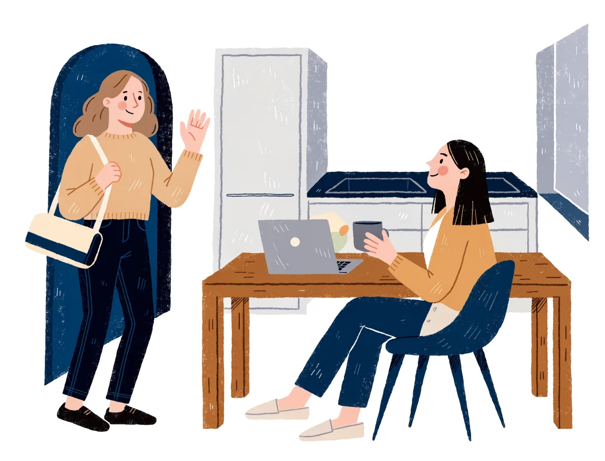
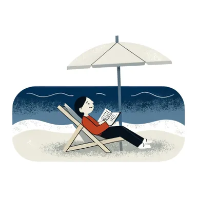
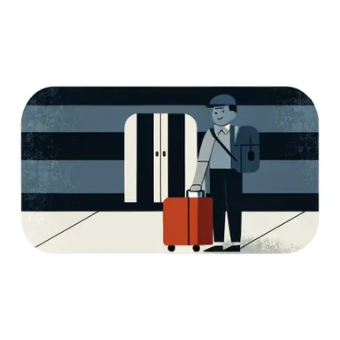
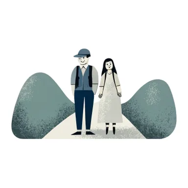
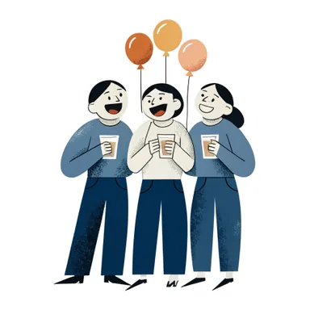
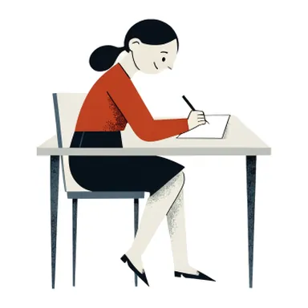
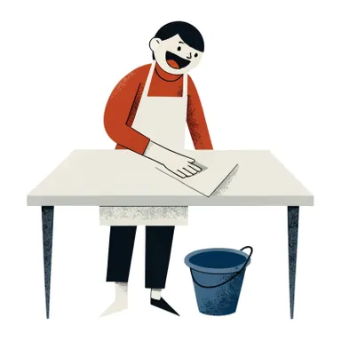

배우기 전에 먼저 해 보세요. 틀려도 괜찮아요.
'저는 장을 봤어요'는 어떻게 말할까요?
지난 일은 haben과 과거분사로 말해요. 과거분사는 문장 끝에 와요.
Ich war krank.은 무슨 뜻일까요?
war는 sein의 지난 모양이에요.

월요일 아침이면 누구나 주말 이야기를 해요. 회의에서는 지난주에 한 일을 보고하고, 상담을 받을 때는 지금까지 한 일을 말해요. 이 과에서는 지난 일을 말하는 법을 배워요.
문법 Perfekt mit haben und sein, war, hatte
과제대학지난 학기에 한 일을 간단히 말하기
과제직장지난주에 한 업무를 간단히 보고하기
이 과를 마치면 주말과 휴가에 한 일을 이야기하고, 한 일과 안 한 일을 말하고, 내 이력을 간단히 말할 수 있어요.
이 과에서 쓸 말이에요. 눌러서 먼저 들어 보세요.
배우기 전에 먼저 해 보세요. 틀려도 괜찮아요.
'저는 장을 봤어요'는 어떻게 말할까요?
지난 일은 haben과 과거분사로 말해요. 과거분사는 문장 끝에 와요.
Ich war krank.은 무슨 뜻일까요?
war는 sein의 지난 모양이에요.
Lektion 3의 낱말 다섯 개를 다시 떠올려 보세요.
월요일 아침, WG 부엌이에요. 주말에 함부르크에 다녀온 Lena와 집에 있던 Jiu가 이야기해요.
들으면서 찾아보세요. Jiu는 일요일에 누구와 통화했나요?
월요일 오전, 회의실이에요. Frau Hoffmann이 Dohyun에게 지난주에 한 일을 물어요.
들으면서 찾아보세요. Dohyun이 아직 끝내지 못한 일은 무엇인가요?
Sora는 독일에서 다시 일하고 싶어요. 직업 상담을 받으러 왔어요. 상담사가 지금까지 한 일을 물어요.
들으면서 찾아보세요. Sora는 디자이너로 몇 년 동안 일했나요?
세 대화를 듣고 답하세요.
Jiu는 토요일에 무엇을 했나요?
Jiu는 일요일에 누구와 통화했나요?
Lena hat in Hamburg ihre Schwestern besucht.
Das Wetter in Hamburg war gut.
날씨는 나빴지만 재미있었다고 했어요.
Dohyun은 지난주 월요일에 무엇을 했나요?
Dohyun이 아직 끝내지 못한 일은 무엇인가요?
Sora는 디자이너로 몇 년 동안 일했나요?
Sora hat in Deutschland schon gearbeitet.
아직 일하지 않았어요. 먼저 독일어를 배웠어요.
낱말 38개예요. 낱말이나 예문 앞의 단추를 누르면 소리가 나요. 명사는 der, die, das를 색으로 구분했어요.
vorgestern 그저께
Vorgestern war ich im Kino.그저께 영화관에 갔어요.
letzte Woche 지난주
Letzte Woche war ich krank.지난주에 아팠어요.
letztes Jahr 작년
Letztes Jahr war ich in Korea.작년에는 한국에 있었어요.
der Monat, die Monate 달, 개월
Ich lerne seit drei Monaten Deutsch.저는 석 달째 독일어를 배우고 있어요.
früher 예전에
Früher habe ich in Seoul gewohnt.예전에는 서울에 살았어요.
zuerst 먼저
Ich habe zuerst Deutsch gelernt.먼저 독일어를 배웠어요.
wieder 다시
Ich bin wieder gesund.다시 건강해졌어요.
schon einmal 이미 한 번
Warst du schon einmal in Berlin?베를린에 가 본 적 있어요?
noch nie 아직 한 번도 ~ 않다
Ich war noch nie in Hamburg.함부르크에 아직 한 번도 못 가 봤어요.

der Urlaub, die Urlaube 휴가
Wie war Ihr Urlaub?휴가는 어떠셨어요?
die Ferien (Pl.) 방학
In den Ferien habe ich gearbeitet.방학에는 일했어요.

die Reise, die Reisen 여행
Die Reise war sehr schön.여행이 정말 좋았어요.

der Ausflug, die Ausflüge 나들이, 당일 여행
Wir haben einen Ausflug gemacht.우리는 나들이를 갔어요.
das Wetter 날씨
Das Wetter war schlecht.날씨가 나빴어요.
der Film, die Filme 영화
Wir haben einen Film gesehen.우리는 영화를 봤어요.

die Party, die Partys 파티
Die Party war toll.파티가 정말 좋았어요.
der Spaß 재미
Wir hatten viel Spaß.우리는 아주 재미있었어요.
das Semester, die Semester 학기
Letztes Semester hatte ich fünf Kurse.지난 학기에 수업을 다섯 개 들었어요.
das Studium 대학 공부, 전공
Mein Studium war interessant.대학 공부는 재미있었어요.

die Prüfung, die Prüfungen 시험
Ich habe drei Prüfungen geschrieben.시험을 세 번 봤어요.
das Praktikum, die Praktika 실습, 인턴 근무
Ich habe ein Praktikum gemacht.인턴으로 일했어요.
die Stelle, die Stellen 일자리
Sora sucht eine Stelle.Sora는 일자리를 찾고 있어요.
der Lebenslauf, die Lebensläufe 이력서
Haben Sie einen Lebenslauf?이력서가 있으세요?
der Bericht, die Berichte 보고서
Ich habe den Bericht geschrieben.보고서를 썼어요.
das Angebot, die Angebote 견적서, 제안
Ich habe das Angebot geschickt.견적서를 보냈어요.
als ~로 (직업, 자격)
Ich habe als Designerin gearbeitet.저는 디자이너로 일했어요.
fertig 끝난, 다 된
Der Bericht ist noch nicht fertig.보고서는 아직 끝내지 못했어요.
interessant 흥미로운, 재미있는
Das Projekt war interessant.그 프로젝트는 재미있었어요.
anstrengend 힘든
Die Woche war anstrengend.그 주는 힘들었어요.
langweilig 지루한
Der Film war langweilig.그 영화는 지루했어요.
toll 아주 좋은, 멋진
Das Wochenende war toll!주말이 정말 좋았어요!
reisen (ist gereist) 여행하다
Wir sind nach Italien gereist.우리는 이탈리아로 여행을 갔어요.
wandern (ist gewandert) 걸어서 산과 들을 다니다
Am Sonntag sind wir gewandert.일요일에 우리는 걷기 여행을 했어요.
passieren (ist passiert) (일이) 일어나다
Was ist passiert?무슨 일이 있었어요?

putzen (hat geputzt) 청소하다, 닦다
Ich habe die Wohnung geputzt.집을 청소했어요.
aufräumen (hat aufgeräumt) 정리하다
Jiu hat ihr Zimmer aufgeräumt.Jiu는 자기 방을 정리했어요.
schicken (hat geschickt) 보내다
Ich habe die E-Mail geschickt.이메일을 보냈어요.
Wie war es? 어땠어요?
Wie war es in Hamburg?함부르크는 어땠어요?
이 과의 낱말로 여덟 문제를 풀어요.
줄을 누르면 소리가 나요. 원형과 과거분사를 한 묶음으로 익혀요. 굵은 글씨가 원형, 그 옆이 과거분사예요.
줄을 누르면 소리가 나요. 여기 있는 동사는 haben이 아니라 sein과 써요. Ich bin gegangen. Ich bin geblieben.
규칙
독일어는 지난 일을 말할 때 대부분 Perfekt를 써요. haben을 주어에 맞게 바꿔 두 번째 자리에 놓고, 과거분사를 문장 맨 끝에 놓아요. 조동사 문장과 같은 Satzklammer예요.
| 1 | 2 haben | 가운데 | 끝 과거분사 |
|---|---|---|---|
| Ich | habe | am Samstag | eingekauft. |
| Wir | haben | einen Film | gesehen. |
| Was | hast | du | gemacht? |
| Am Sonntag | hat | Jiu | gelernt. |
주의 부정하는 nicht는 과거분사 앞에 와요. Ich habe nicht gearbeitet. 명사를 부정할 때는 kein을 써요. Ich habe keinen Film gesehen. 영어처럼 과거분사를 haben 바로 뒤에 붙이지 않아요.
규칙을 보고 바로 확인해 보세요.
Perfekt 문장에서 과거분사는 어디에 오나요?
규칙
규칙 동사의 과거분사는 어간 앞에 ge-, 뒤에 -t를 붙여요. 불규칙 동사는 ge-와 -en을 붙이고 모음이 바뀌기도 해요. 불규칙 동사는 정해진 규칙이 없어서 동사를 배울 때 과거분사도 함께 외워요.
| 종류 | 원형 | 과거분사 |
|---|---|---|
| 규칙 ge-…-t | machen, kaufen | gemacht, gekauft |
| 불규칙 ge-…-en | essen, schreiben | gegessen, geschrieben |
| 분리동사 | einkaufen, anrufen | eingekauft, angerufen |
| ge- 없음 | besuchen, studieren | besucht, studiert |
주의 어간이 -t로 끝나면 -et를 붙여요. gearbeitet. 분리동사는 ge가 가운데로 들어가요. be-나 ver-로 시작하는 동사와 -ieren으로 끝나는 동사에는 ge-가 붙지 않아요. besucht, studiert, telefoniert. 낱말 순서의 표에서 과거분사를 소리로 들어 보세요.
규칙을 보고 바로 확인해 보세요.
schreiben의 과거분사는 무엇인가요?
규칙
한 곳에서 다른 곳으로 움직이는 동사는 haben이 아니라 sein과 Perfekt를 만들어요. gehen, fahren, kommen, reisen, aufstehen이 그래요. bleiben과 passieren도 sein과 써요.
| sein | 과거분사 | |
|---|---|---|
| ich | bin | gegangen |
| du | bist | gefahren |
| er, sie | ist | gekommen |
| wir | sind | geblieben |
| ihr | seid | aufgestanden |
| sie, Sie | sind | gereist |
주의 대부분의 동사는 haben과 써요. sein과 쓰는 동사만 따로 외우면 돼요. bleiben은 움직이지 않는데도 sein과 써요. Ich bin zu Hause geblieben.
규칙을 보고 바로 확인해 보세요.
gehen, fahren, kommen의 Perfekt는 무엇과 함께 쓰나요?
규칙
sein과 haben은 지난 일을 말할 때 Perfekt보다 war, hatte를 더 많이 써요. ich와 er, sie의 모양이 같아요.
| sein | haben | |
|---|---|---|
| ich | war | hatte |
| du | warst | hattest |
| er, sie | war | hatte |
| wir | waren | hatten |
| ihr | wart | hattet |
| sie, Sie | waren | hatten |
주의 한국어 '있었다'는 두 가지로 나뉘어요. '어디에 있었다, 어떠했다'는 war, '가지고 있었다'는 hatte예요. Ich war in Hamburg. Ich hatte viel Spaß. 지난 때는 gestern, letzte Woche, letztes Jahr, vor sechs Monaten(여섯 달 전에)처럼 말해요.
규칙을 보고 바로 확인해 보세요.
war는 어느 동사의 지난 모양인가요?
듣고 알맞은 것을 고르세요.
Markus는 토요일에 무엇을 했나요?
Am Samstag habe ich mit Mia und Paul Fußball gespielt.
Jiu는 어제 몇 시에 일어났나요?
Gestern bin ich um sechs Uhr aufgestanden.
Sora의 가족은 마인츠에 무엇을 타고 갔나요?
Wir sind am Sonntag mit dem Zug nach Mainz gefahren.
Lena는 한국에 가 본 적이 있나요?
Ich war noch nie in Korea.
Markus와 Dohyun이 월요일 아침에 주말 이야기를 해요. 듣고 알맞은 것을 고르세요.
Am Montagmorgen
Markus Morgen, Dohyun! Wie war dein Wochenende?
Dohyun Schön! Am Samstag habe ich die Wohnung geputzt. Am Abend habe ich mit meiner Frau telefoniert.
Markus Und am Sonntag?
Dohyun Am Sonntag bin ich mit dem Zug nach Heidelberg gefahren. Die Stadt ist sehr schön. Und du?
Markus Wir waren im Zoo. Die Kinder hatten viel Spaß. Aber am Abend war ich sehr müde.
Dohyun은 토요일 저녁에 무엇을 했나요?
Dohyun은 일요일에 어디에 갔나요?
Markus는 주말에 어디에 갔나요?
Sora의 이력서를 읽고, 맞으면 richtig, 틀리면 falsch를 고르세요. Lebenslauf는 이력서예요. seit는 '~부터 지금까지'라는 뜻이에요.
Lebenslauf: Sora Lee
| Zeit | Was? | Wo? |
|---|---|---|
| 2007–2011 | Studium: Design | Seoul |
| 2011–2021 | Designerin bei einer Möbelfirma | Seoul |
| 2022–2025 | Designprojekte zu Hause | Seoul |
| seit 2026 | Deutschkurs | Frankfurt |
Sora hat in Seoul Design studiert.
Sora hat vier Jahre studiert.
2007년부터 2011년까지 공부했어요.
Sora hat fünf Jahre bei einer Möbelfirma gearbeitet.
2011년부터 2021년까지 10년 동안 일했어요.
Sora hat in Deutschland studiert.
서울에서 공부했어요.
Seit 2026 lernt Sora in Frankfurt Deutsch.
haben과 sein 가운데 알맞은 말을 고르세요.
Ich am Samstag eingekauft.
Wir nach Hamburg gefahren.
Lena ihre Schwestern besucht.
Ich zu Hause geblieben.
du gut geschlafen?
Wann Sie nach Deutschland gekommen?
Dohyun den Bericht geschrieben.
알맞은 과거분사를 고르세요.
Ich habe Deutsch .
Wir haben Pizza .
Jiu hat mit ihren Eltern .
Hast du die E-Mail ?
Am Samstag habe ich .
Sora ist um sieben .
빈칸에 과거분사를 쓰세요.
machen – Ich habe einen Ausflug .
kaufen – Sora hat Brot .
sehen – Wir haben einen Film .
gehen – Ich bin ins Kino .
besuchen – Lena hat ihre Schwestern .
war와 hatte의 알맞은 형태를 고르세요.
Wie dein Wochenende?
Ich keine Zeit.
Wir im Zoo.
Die Kinder viel Spaß.
du schon einmal in Hamburg?
Dohyun drei Tage krank.
낱말을 순서대로 눌러 문장을 만드세요.
저는 토요일에 장을 봤어요.
뭐 했어요?
우리는 함부르크에 갔어요.
저는 사흘 동안 아팠어요.
Sora는 10년 동안 일했어요.
원형과 과거분사를 짝지으세요.
빈칸에 알맞은 낱말을 쓰세요.
war ich im Kino.
어제 영화관에 갔어요.
Woche war ich krank.
지난주에 아팠어요.
Ich war noch in Hamburg.
함부르크에 아직 한 번도 못 가 봤어요.
Wie dein Wochenende?
주말 어땠어요?
듣고 그대로 써 보세요.
Wie war dein Wochenende? 주말 어땠어요?
Ich bin zu Hause geblieben. 저는 집에 있었어요.
Ich habe den Bericht geschrieben. 저는 보고서를 썼어요.
Wie war dein Wochenende? / Wie war Ihr Urlaub? 주말 어땠어요? / 휴가는 어떠셨어요?
Was hast du gemacht? / Was haben Sie gemacht? 뭐 했어요? / 무엇을 하셨어요?
Wo warst du? 어디에 있었어요?
Ich habe eingekauft und gekocht. 장을 보고 요리했어요.
Ich bin nach Hamburg gefahren. 함부르크에 갔어요.
Ich bin zu Hause geblieben. 집에 있었어요.
Ich war im Kino. 영화관에 갔어요.
Es war sehr schön. 정말 좋았어요.
Es war langweilig. 지루했어요.
Ich hatte viel Spaß. 아주 재미있었어요.
Ich hatte keine Zeit. 시간이 없었어요.
Warst du schon einmal in Berlin? 베를린에 가 본 적 있어요?
Ja, schon zweimal. 네, 벌써 두 번요.
Nein, noch nie. 아니요, 아직 한 번도요.
Ich habe Design studiert. 저는 디자인을 전공했어요.
Ich habe zehn Jahre als Designerin gearbeitet. 10년 동안 디자이너로 일했어요.
Ich bin vor sechs Monaten nach Deutschland gekommen. 여섯 달 전에 독일에 왔어요.
Ich habe den Kunden besucht. 고객을 방문했어요.
Ich habe das Angebot geschickt. 견적서를 보냈어요.
Der Bericht ist noch nicht fertig. 보고서는 아직 끝내지 못했어요.
과제 고르기
역할 대화와 말하기, 쓰기 과제는 대학 생활과 직장 생활 두 가지예요. 하나를 고르면 다음 과에서도 그쪽 과제가 나와요. 언제든 바꿀 수 있어요.
대화 A에서 역할을 하나 고르세요. 상대의 말은 음성으로 나오고, 내 차례에는 직접 말해요.
대화 B에서 역할을 하나 고르세요. 상대의 말은 음성으로 나오고, 내 차례에는 직접 말해요.
지난 주말을 떠올리고 칸을 채우세요. 한 일은 eingekauft, gekocht, gelernt처럼 과거분사로, 간 곳은 ins Kino, ins Museum, ins Café처럼 써요. 완성된 문장을 소리 내어 읽어 보세요.
Am Samstag habe ich eingekauft.
Am Sonntag bin ich ins Kino gegangen.
Mein Wochenende war schön.
새 학기 모임에서 옆자리 학생이 지난 학기에 무엇을 했는지 물어요.
지난 학기에는 서울에서 대학을 다녔어요. 수업을 다섯 개 들었고 시험을 세 번 봤어요. 방학에는 카페에서 일했어요. 독일에는 두 달 전에 왔어요.
새 학기 모임에서 만난 학생이 지난 학기에 대해 물어요. 쪽지를 보고 답하세요. 학생끼리는 du를 써요. 질문을 듣고 소리 내어 답한 뒤 예시 답과 비교해 보세요.
Hallo! Was hast du letztes Semester gemacht? 안녕하세요! 지난 학기에는 뭐 했어요?
Ich habe in Seoul studiert. Ich hatte fünf Kurse.
Fünf Kurse! Hattest du auch Prüfungen? 수업이 다섯 개나요! 시험도 있었어요?
Ja, ich habe drei Prüfungen geschrieben. Das war anstrengend.
Und was hast du in den Ferien gemacht? 방학에는 뭐 했어요?
In den Ferien habe ich in einem Café gearbeitet.
Wann bist du nach Deutschland gekommen? 독일에는 언제 왔어요?
Ich bin vor zwei Monaten nach Deutschland gekommen.
Warst du schon einmal in Berlin? 베를린에 가 본 적 있어요?
Nein, noch nie. Aber ich war schon in Heidelberg.
Mein letztes Semester
지난 학기나 지난 한 해에 한 일을 써 보세요. 다섯 문장이면 충분해요.
Letztes Semester habe ich in Seoul studiert. Ich hatte fünf Kurse und habe drei Prüfungen geschrieben. Ich habe auch Deutsch gelernt. In den Ferien habe ich in einem Café gearbeitet. Das Semester war anstrengend, aber interessant.
다 쓴 뒤에 확인해 보세요.
월요일 회의에서 팀장에게 지난주에 한 일을 보고해요.
월요일에는 마인츠의 고객을 방문했어요. 화요일에는 견적서를 써서 보냈어요. 수요일에는 팀 회의에 들어갔어요. 보고서는 아직 끝내지 못했고, 수요일에 보낼 수 있어요.
월요일 회의에서 팀장 Frau Hoffmann이 지난주 업무를 물어요. 쪽지를 보고 답하세요. 질문을 듣고 소리 내어 답한 뒤 예시 답과 비교해 보세요.
Guten Morgen! Was haben Sie letzte Woche gemacht? 좋은 아침이에요! 지난주에는 무슨 일을 하셨어요?
Guten Morgen, Frau Hoffmann. Am Montag habe ich den Kunden in Mainz besucht.
Gut. Und das Angebot? 좋아요. 견적서는요?
Ich habe das Angebot am Dienstag geschrieben und geschickt.
Waren Sie am Mittwoch in der Besprechung? 수요일 회의에 들어오셨어요?
Ja, ich war in der Besprechung.
Haben Sie den Bericht schon geschrieben? 보고서는 벌써 쓰셨어요?
Der Bericht ist leider noch nicht fertig. Ich hatte keine Zeit.
Können Sie den Bericht bis Mittwoch schicken? 보고서를 수요일까지 보낼 수 있어요?
Ja, das geht. Ich schicke den Bericht am Mittwoch.
Mein Wochenbericht
지난주에 한 업무를 팀장에게 메일로 짧게 보고해 보세요. 다섯 문장이면 충분해요.
Guten Morgen, Frau Hoffmann, hier ist mein Bericht für letzte Woche. Am Montag habe ich den Kunden in Mainz besucht. Am Dienstag habe ich das Angebot geschrieben und geschickt. Am Mittwoch war ich in der Besprechung. Der Bericht ist noch nicht fertig. Ich schicke den Bericht am Mittwoch. Viele Grüße, Minji Choi
다 쓴 뒤에 확인해 보세요.
Ich kann über mein Wochenende und meinen Urlaub sprechen.주말과 휴가 이야기를 할 수 있어요.
Ich kann sagen, was ich gemacht habe und was nicht.한 일과 안 한 일을 말할 수 있어요.
Ich kann kurz über mein Studium und meine Arbeit berichten.공부와 일의 이력을 간단히 말할 수 있어요.
Ich kann das Perfekt mit haben und sein benutzen.haben, sein과 함께 Perfekt를 쓸 수 있어요.